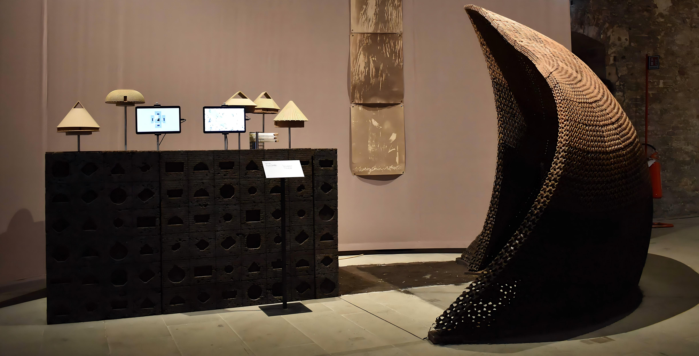
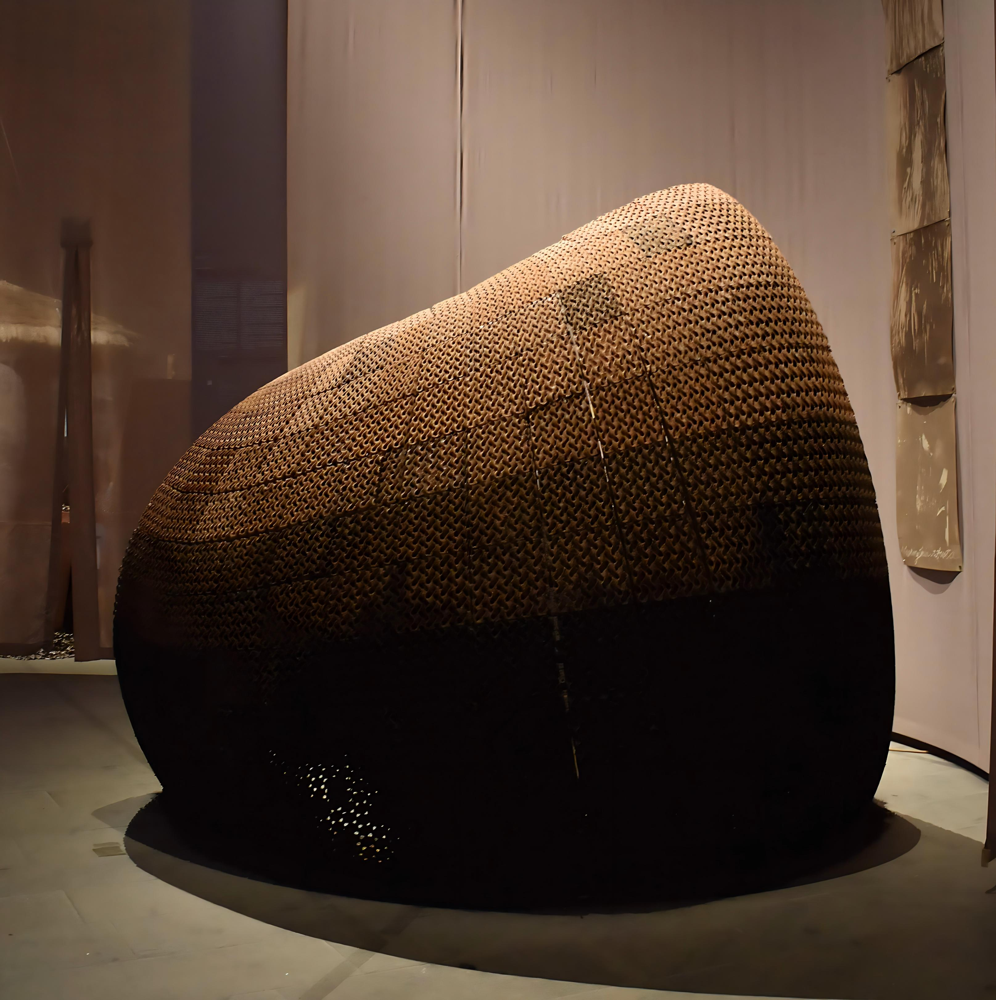
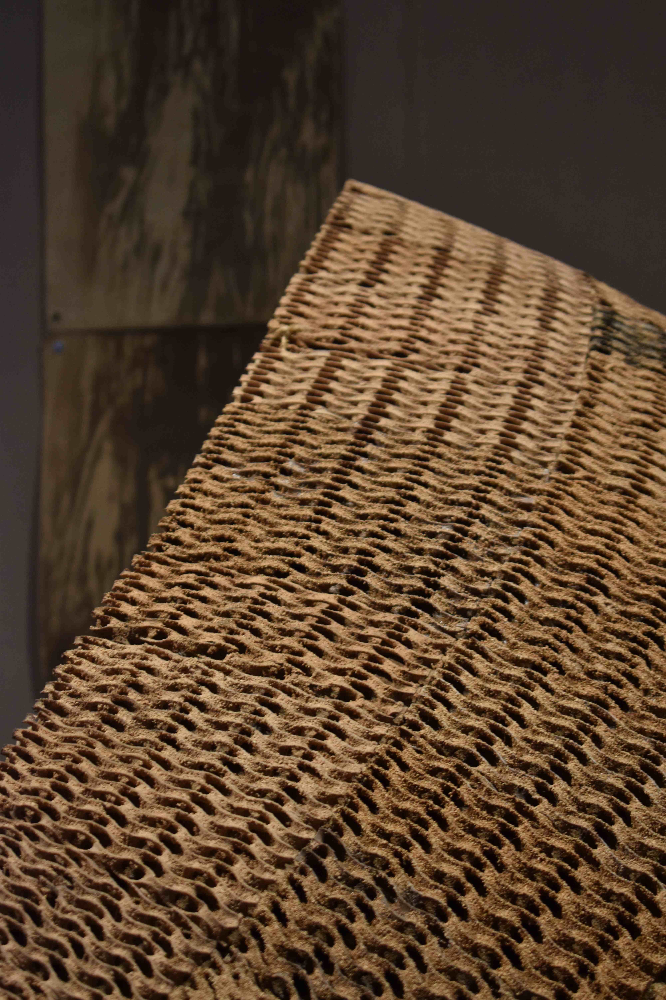
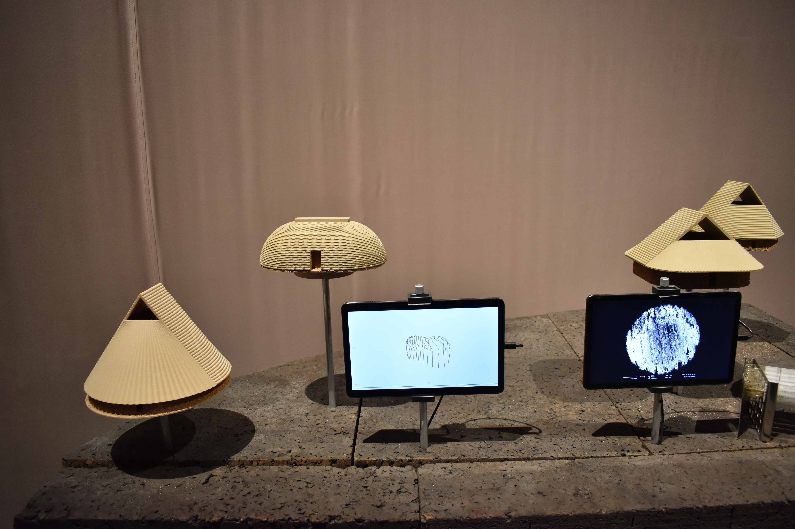
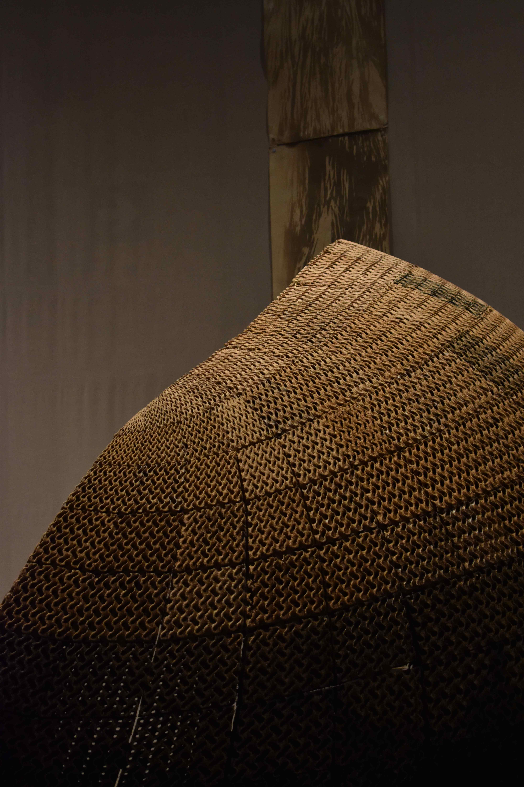
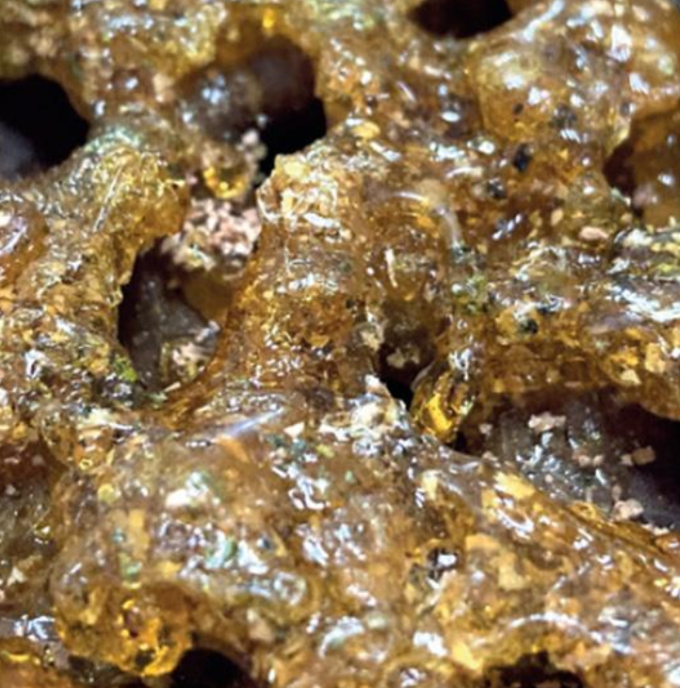

Palm Onto-Intelligence
Palm Onto-Intelligence is a project presented at the 2025 La Biennale di Venezia. It is conceived as a domain of and for belonging, featuring four material-territorial quarters that signify the unique social, technological, and regenerative material dynamics of future construction in the Western Amazon. Through the convergence of architecture, biosynthesis, art, anthropology, artificial intelligence, and co-design, the installation examines multiple dimensions of material intelligence in the region. It showcases various permutations of synergistic material functionalities of palm, cork, and engineered yeast (DNA) to pioneer 3D screens with cooling, antimicrobial, and flood-resilience properties. Intelligent material behavior is explored as a means of belonging within future material cultures of plant-human relationships.




